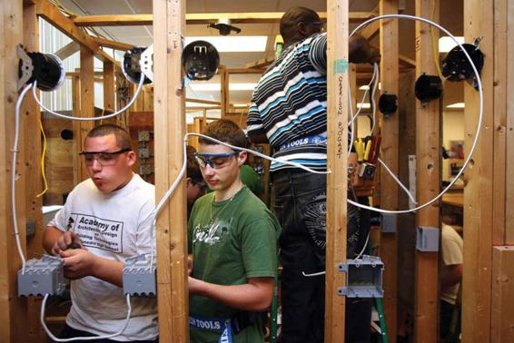

Another seminal figure who wrote about education and reproduction is French sociologist Pierre Bourdieu, who argued that schools reproduce social-class inequality by rewarding certain cultural norms over others (1984, 1988). Bourdieu’s focus on the role of culture in the process of reproduction distinguished his theory from a strict Marxist analysis that focused on how schools mirrored and reproduced economic-class structures. For this reason, he used the term cultural reproduction. In relation to his theory of cultural reproduction, Bourdieu argued that people could possess many kinds of capital other than financial capital. Specifically, he was concerned with the existence of what he called cultural capital. That is, his theory of cultural reproduction proposes that middle- and upper-class children come to schools with a certain kind of cultural capital—speech patterns, demeanors, tastes, and so on—that the school values, and thus rewards. Bourdieu argues that children from low-income or working-class homes do not possess these same cultural characteristics and thus are placed at a disadvantage in schools.
Another important concept Bourdieu offers is the notion of habitus, which refers to a class-based set of dispositions, such as taste, language use, and demeanor. For Bourdieu, these dispositions are internalized unconsciously through social practices within one’s social group. Put simply, poor and working-class children are socialized into a particular habitus—one that is not valued within the school system. In arguing that working-class individuals are unconsciously socialized into a working-class culture (and therefore are not likely to obtain the dispositions required for school success), Bourdieu, like Bowles and Gintis, ultimately proposes a theory of reproduction in which the cycle of domination seems unbreakable.
Two students at a vocational high school in Florida learn how to wire a light switch. Career academies such as this one encourage students to work toward national industry certifications.
These kinds of theories have been challenged by the notion of schools as contested spaces (Aronowitz and Giroux, 1985; Willis, 1977). It has been proposed that social reproduction does not happen without struggle or opposition from oppressed groups. Written over 40 years ago but still important today, Paul Willis’s influential ethnographic study of working-class British youth known as “the lads” shows how working-class students exhibit an implicit understanding that schooling is not structured to benefit their group (industrial factory workers) as a whole. The lads express their understanding that schooling is not designed to better their own conditions as members of the working class by embracing a working-class culture that valorizes manual labor and a counter-school culture. In doing so, they participate in the reproduction of their own class subordination. Willis suggests that these insights demonstrate that working-class youth are not passive dupes in the process of reproduction. Willis also suggests that the emphasis on the lads being in control of their destiny points to possibilities for organized resistance. A number of subsequent studies of resistance in schooling in the United States (Foley, 1994; McLaren, 1985; McLeod, 1995; Solomon, 1992; Valenzuela, 1999) have expanded our understanding of schools as contested spaces.
Table 16.1APPLYING SOCIOLOGY TO EDUCATION
CONCEPT
APPROACH TO EDUCATION
CURRENT APPLICATION
Assimilation
Education is important in creating a common culture.
The use of curricula in high schools across the country that instill a common set of values in students regardless of their racial, ethnic, and religious differences.
Credentialism
The diploma one gets at graduation is more important than what a person learns in school.
Parents going to exorbitant lengths and costs to hire consultants who will help their children get into elite undergraduate schools despite the fact that they can learn as much at a local state school.
Hidden Curriculum
Unspoken academic, social, and cultural messages that are communicated to students while they are in school.
Popular fashions and trends in minority communities that are forbidden by school authorities, thereby implying that they are inferior to those of mainstream culture (e.g., bans on baggy pants).
Cultural Capital
Knowledge and tastes possessed by the elites that are mainly learned at home and not taught in school. These can include highbrow culture like classical music or a rich vocabulary, or superior knowledge of how institutions work.
Parents’ knowledge of the college admissions process can give their children a significant edge over less advantaged children of equal ability.
CONCEPT CHECKS
Contrast credentialism and social-reproduction perspectives on education.
How does the hidden curriculum serve to perpetuate social and economic inequalities?
What did Pierre Bourdieu mean by “cultural capital”?